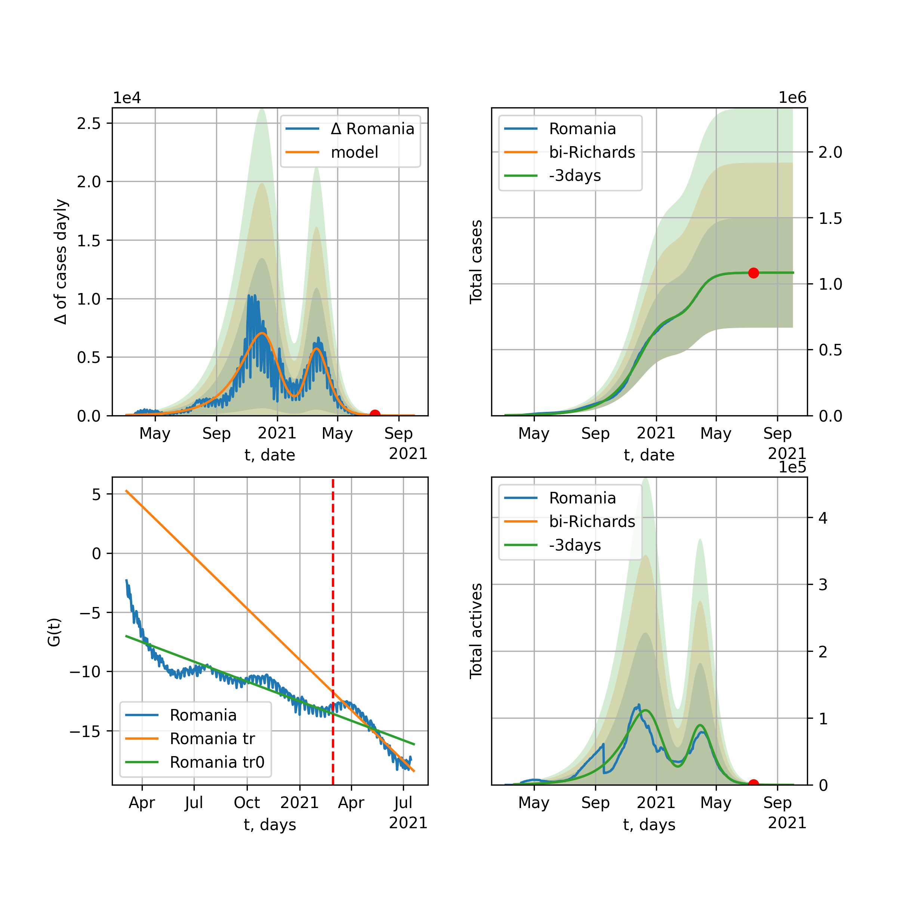
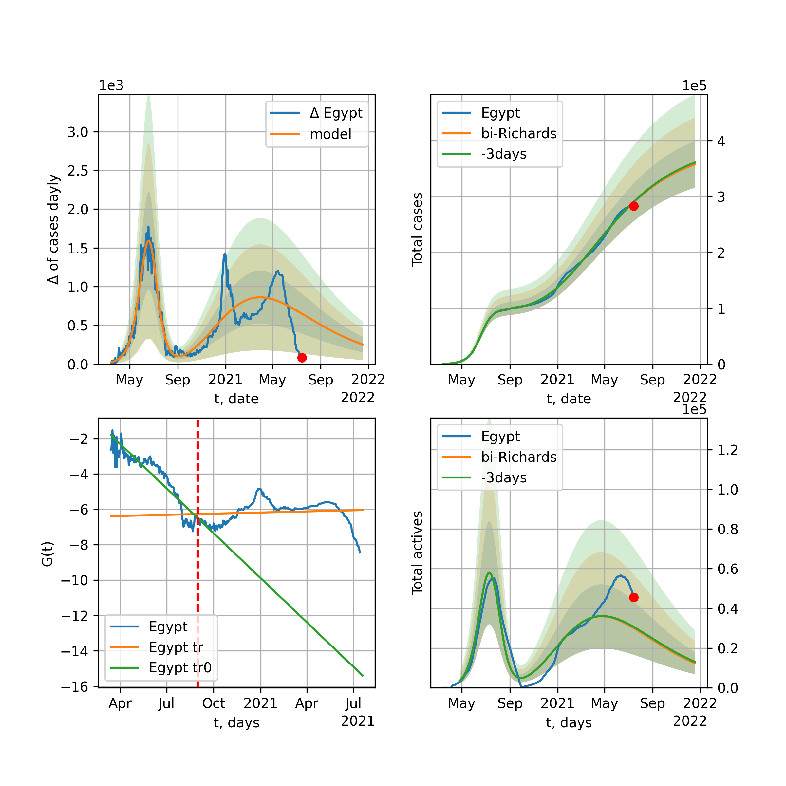
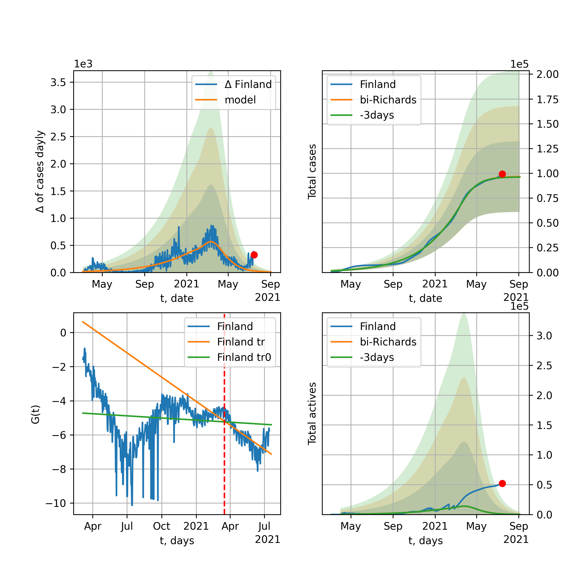
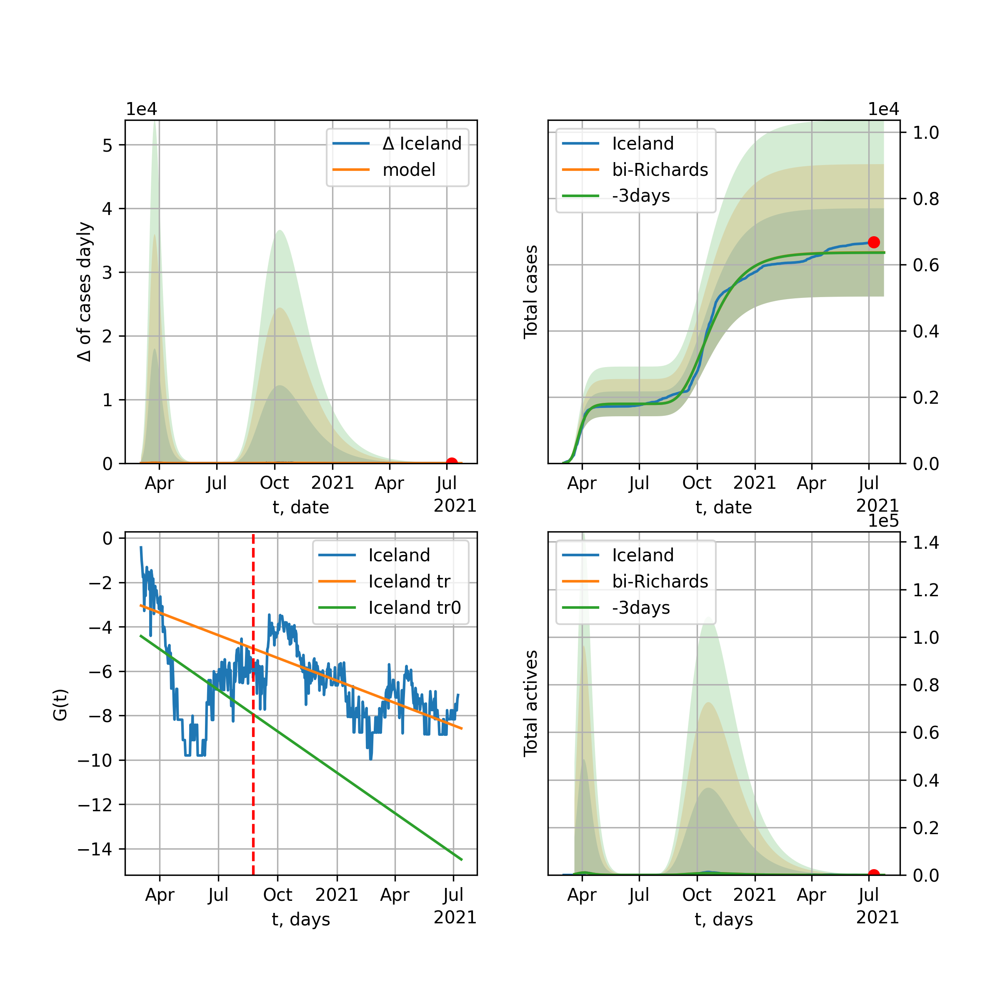
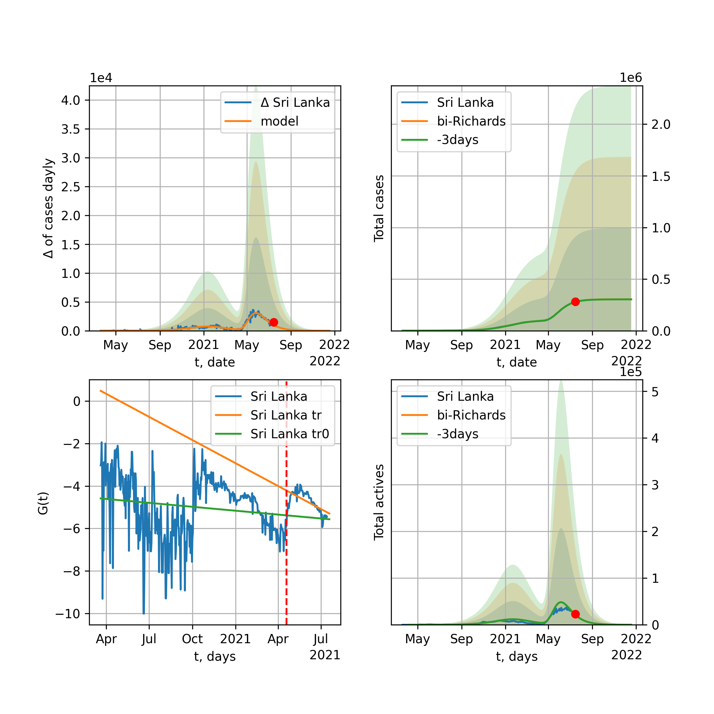
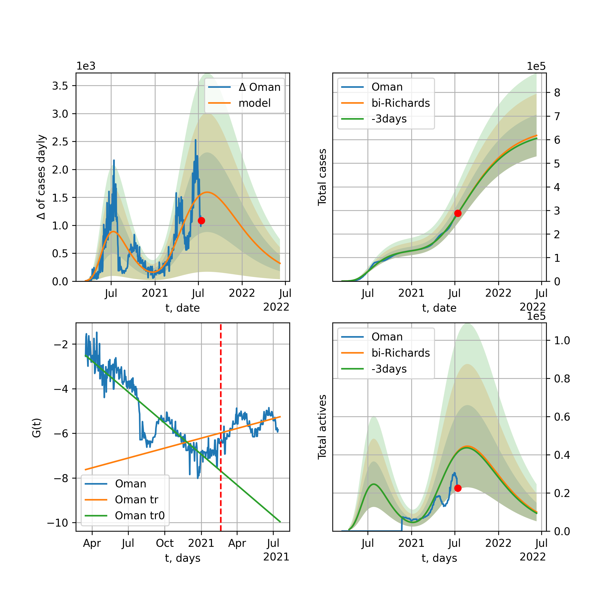
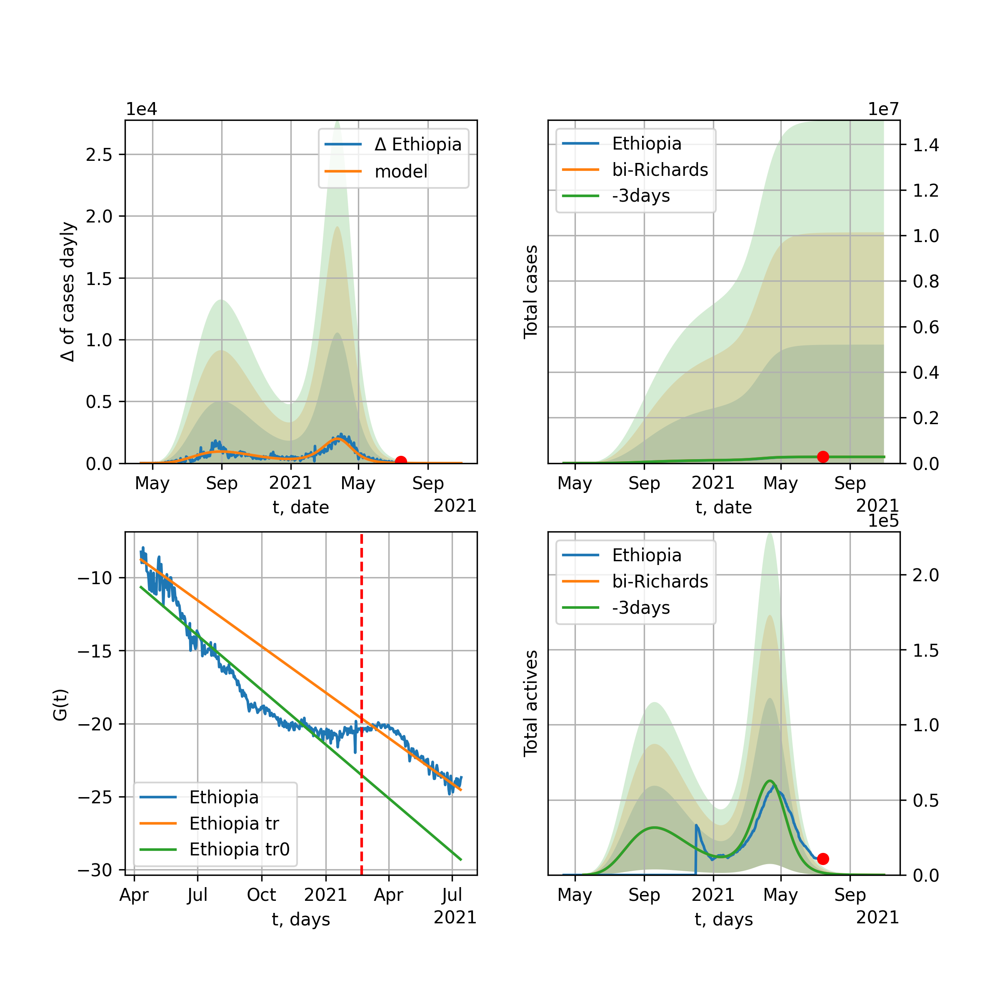

World

World data at: 2021-05-15
10 day model MAPE: 0.002550
model: bi-Richards
coeffs: [-1.00938707e+07 2.36879685e-01 3.34846474e+02 6.10142967e-01]
rational stdev: 0.194625
forecast at the end of period: +1027 days
deltaDaycases: 394
total cases: 263643779 ± 51311645
total death: 5466878 ± 3191971
bi-Richards approximation splitting point: 395
actives k: 33
trend coefficient of determination: 0.883468
intercept: -11.962238
slope: -0.014386
trend coefficient of determination: 0.513399
intercept: -12.028029
slope: -0.011488
European Union

European Union data at: 2021-05-15
10 day model MAPE: 0.002435
model: bi-Richards
coeffs: [2.23793562e+07 1.18598135e+00 8.51800993e+01 1.44831188e-02]
rational stdev: 1.261206
forecast at the end of period: +182 days
deltaDaycases: 5748
total cases: 38148457 ± 48113078
total death: 853863 ± 3230692
bi-Richards approximation splitting point: 335
actives k: 35
trend coefficient of determination: 0.004030
intercept: -5.123985
slope: 0.000502
trend coefficient of determination: 0.585653
intercept: 0.707768
slope: -0.017457
Brazil

Brazil data at: 2021-05-15
10 day model MAPE: 0.001154
model: bi-Richards
coeffs: [ 1.66858110e+07 7.12002515e-01 -1.18342441e+01 1.47019297e-02]
rational stdev: 0.218083
forecast at the end of period: +357 days
deltaDaycases: 2554
total cases: 23005291 ± 5017068
total death: 641661 ± 419806
bi-Richards approximation splitting point: 220
actives k: 17
trend coefficient of determination: 0.521804
intercept: -2.087238
slope: -0.014955
trend coefficient of determination: 0.004270
intercept: -5.736055
slope: 0.000442
Russia

Russia data at: 2021-05-15
10 day model MAPE: 0.003653
model: bi-Richards
coeffs: [3.92037942e+06 6.24439894e-01 5.23621545e+01 2.97364466e-02]
rational stdev: 0.137452
forecast at the end of period: +147 days
deltaDaycases: 262
total cases: 5040064 ± 692764
total death: 118017 ± 48664
bi-Richards approximation splitting point: 200
actives k: 26
trend coefficient of determination: 0.731459
intercept: -3.047806
slope: -0.015898
trend coefficient of determination: 0.942673
intercept: -2.067944
slope: -0.012472
USA

USA data at: 2021-05-15
10 day model MAPE: 0.002427
model: bi-Richards
coeffs: [1.76315971e+07 2.74634529e+00 1.16814716e+02 1.04849026e-02]
rational stdev: 0.199394
forecast at the end of period: +210 days
deltaDaycases: 3289
total cases: 35109192 ± 7000545
total death: 625022 ± 373875
bi-Richards approximation splitting point: 256
actives k: 52
trend coefficient of determination: 0.584105
intercept: -2.949309
slope: -0.010407
trend coefficient of determination: 0.881213
intercept: -0.172079
slope: -0.016202
Spain

Spain data at: 2021-05-14
10 day model MAPE: 0.006888
model: bi-Richards
coeffs: [1.74319080e+06 6.23060073e+00 1.76535173e+02 5.94073576e-03]
rational stdev: 0.395093
forecast at the end of period: +78 days
deltaDaycases: 50
total cases: 3481050 ± 1375338
total death: 76615 ± 90810
bi-Richards approximation splitting point: 306
actives k: 52
trend coefficient of determination: 0.022824
intercept: -4.616748
slope: -0.002237
trend coefficient of determination: 0.559725
intercept: -0.035014
slope: -0.015618
Italy

Italy data at: 2021-05-15
10 day model MAPE: 0.000833
model: bi-Richards
coeffs: [1.94477126e+06 1.90786094e+00 2.35924695e+02 1.55369542e-02]
rational stdev: 2.316102
forecast at the end of period: +147 days
deltaDaycases: 117
total cases: 4437087 ± 10276748
total death: 132537 ± 920907
bi-Richards approximation splitting point: 346
actives k: 28
trend coefficient of determination: 0.031574
intercept: -4.608117
slope: -0.002739
trend coefficient of determination: 0.418077
intercept: -1.763218
slope: -0.009906
United Kingdom

United Kingdom data at: 2021-05-15
10 day model MAPE: 0.000456
model: bi-Richards
coeffs: [3.79693281e+06 5.49114710e-02 1.84238575e+02 7.07679361e-01]
rational stdev: 0.262213
forecast at the end of period: +77 days
deltaDaycases: 31
total cases: 4451130 ± 1167144
total death: 127740 ± 100485
bi-Richards approximation splitting point: 209
actives k: 48
trend coefficient of determination: 0.085434
intercept: -14.596065
slope: 0.003127
trend coefficient of determination: 0.922746
intercept: -8.259269
slope: -0.031950
France

France data at: 2021-05-15
10 day model MAPE: 0.001888
model: bi-Richards
coeffs: [9.69727518e+05 7.19309089e-02 2.20955006e+02 8.58342023e+00]
rational stdev: 0.247758
forecast at the end of period: +112 days
deltaDaycases: 0
total cases: 5534897 ± 1371317
total death: 101502 ± 75443
bi-Richards approximation splitting point: 235
actives k: 70
trend coefficient of determination: 0.810131
intercept: -98.078564
slope: -0.104729
trend coefficient of determination: 0.953386
intercept: -116.430912
slope: -0.055140
Germany

Germany data at: 2021-05-15
10 day model MAPE: 0.014636
model: bi-Richards
coeffs: [ 3.60793989e+06 1.53979717e+00 -5.10219510e+01 9.00844170e-03]
rational stdev: 0.177112
forecast at the end of period: +91 days
deltaDaycases: 2029
total cases: 3691147 ± 653747
total death: 88965 ± 47270
bi-Richards approximation splitting point: 215
actives k: 17
trend coefficient of determination: 0.300732
intercept: -3.766137
slope: -0.012559
trend coefficient of determination: 0.615241
intercept: -1.730990
slope: -0.009925
Turkey

Turkey data at: 2021-05-15
10 day model MAPE: 0.003025
model: bi-Richards
coeffs: [2.56879603e+06 7.85779308e-02 3.83307444e+02 1.22095565e+00]
rational stdev: 0.221853
forecast at the end of period: +77 days
deltaDaycases: 7
total cases: 5232180 ± 1160774
total death: 45629 ± 30368
bi-Richards approximation splitting point: 360
actives k: 17
trend coefficient of determination: 0.606230
intercept: -18.516061
slope: -0.016608
trend coefficient of determination: 0.601161
intercept: -11.400429
slope: -0.030692
Iran

Iran data at: 2021-05-15
10 day model MAPE: 0.014064
model: bi-Richards
coeffs: [4.29849421e+06 4.39372082e-01 2.24896190e+02 3.34953826e-02]
rational stdev: 0.263962
forecast at the end of period: +231 days
deltaDaycases: 2458
total cases: 5603864 ± 1479209
total death: 156737 ± 124117
bi-Richards approximation splitting point: 360
actives k: 25
trend coefficient of determination: 0.553192
intercept: -3.372992
slope: -0.007765
trend coefficient of determination: 0.218055
intercept: -8.001446
slope: 0.005981
Canada

Canada data at: 2021-05-15
10 day model MAPE: 0.005768
model: bi-Richards
coeffs: [3.70420172e+04 3.38643336e-01 4.33410663e+01 5.23935896e-01]
rational stdev: 0.270376
forecast at the end of period: +203 days
deltaDaycases: 0
total cases: 944437 ± 255353
total death: 17771 ± 14414
bi-Richards approximation splitting point: 403
actives k: 17
trend coefficient of determination: 0.513117
intercept: -8.278979
slope: -0.012517
trend coefficient of determination: 0.775535
intercept: -3.992614
slope: -0.019903
South Africa

South Africa data at: 2021-05-15
10 day model MAPE: 0.003205
model: bi-Richards
coeffs: [8.69456602e+05 4.94267201e-02 3.05106481e+02 1.56606303e+00]
rational stdev: 0.940590
forecast at the end of period: +42 days
deltaDaycases: 0
total cases: 1555316 ± 1462914
total death: 53270 ± 150315
bi-Richards approximation splitting point: 235
actives k: 17
trend coefficient of determination: 0.895489
intercept: -11.124113
slope: -0.083320
trend coefficient of determination: 0.652352
intercept: -21.421667
slope: -0.019869
Belgium

Belgium data at: 2021-05-15
10 day model MAPE: 0.002806
model: bi-Richards
coeffs: [7.96043967e+05 7.96024499e-01 4.56214770e+01 1.54029530e-02]
rational stdev: 3.573299
forecast at the end of period: +182 days
deltaDaycases: 617
total cases: 1354719 ± 4840816
total death: 32466 ± 348032
bi-Richards approximation splitting point: 304
actives k: 61
trend coefficient of determination: 0.086775
intercept: -4.187093
slope: -0.005007
trend coefficient of determination: 0.014335
intercept: -6.476613
slope: 0.001416
Peru

Peru data at: 2021-05-15
10 day model MAPE: 0.000999
model: bi-Richards
coeffs: [1.15465131e+06 2.02605936e+00 1.27221635e+02 9.35334007e-03]
rational stdev: 0.285893
forecast at the end of period: +147 days
deltaDaycases: 501
total cases: 2218789 ± 634336
total death: 77598 ± 66554
bi-Richards approximation splitting point: 265
actives k: 10
trend coefficient of determination: 0.905278
intercept: -1.930528
slope: -0.017482
trend coefficient of determination: 0.281583
intercept: -7.875174
slope: 0.005985
Netherlands

Netherlands data at: 2021-05-15
10 day model MAPE: 0.001284
model: bi-Richards
coeffs: [7.60079376e+05 3.01726356e+00 3.69616781e+01 7.70770131e-03]
rational stdev: 0.245877
forecast at the end of period: +287 days
deltaDaycases: 5
total cases: 3040035 ± 747475
total death: 33259 ± 24532
bi-Richards approximation splitting point: 225
actives k: 35
trend coefficient of determination: 0.045092
intercept: -4.094656
slope: -0.005269
trend coefficient of determination: 0.616311
intercept: -2.299316
slope: -0.008315
India

India data at: 2021-05-15
10 day model MAPE: 0.019265
model: bi-Richards
coeffs: [1.57385938e+07 6.32012384e-02 4.18818827e+02 2.32049008e+00]
rational stdev: 0.244424
forecast at the end of period: +77 days
deltaDaycases: 117
total cases: 26736401 ± 6535007
total death: 292794 ± 214697
bi-Richards approximation splitting point: 322
actives k: 13
trend coefficient of determination: 0.861127
intercept: -22.044662
slope: -0.083216
trend coefficient of determination: 0.638351
intercept: -50.551622
slope: 0.018585
Switzerland

Switzerland data at: 2021-05-15
+3 day model MAPE: 0.093057
model: Richards
coeffs: [1.22064734e+06 8.28437000e-03 5.52830782e+02 6.42468747e+00]
rational stdev: 0.371323
forecast at the end of period: +7 days
deltaDaycases: 729
total cases: 88446 ± 32842
total death: 1396 ± 1555
trend coefficient of determination: 0.420706
intercept: -63.463550
slope: -0.064902
Ecuador

Ecuador data at: 2021-05-15
10 day model MAPE: 0.008989
model: bi-Richards
coeffs: [ 7.16748453e+05 5.22618013e-01 -5.54891120e+02 9.64975565e-03]
rational stdev: 0.136334
forecast at the end of period: +217 days
deltaDaycases: 731
total cases: 615957 ± 83975
total death: 29618 ± 12113
bi-Richards approximation splitting point: 80
actives k: 26
trend coefficient of determination: 0.273655
intercept: -2.218374
slope: -0.047308
trend coefficient of determination: 0.101943
intercept: -4.608980
slope: -0.003346
Portugal

Portugal data at: 2021-05-15
10 day model MAPE: 0.001807
model: bi-Richards
coeffs: [4.36065408e+05 3.66497270e-01 2.96571433e+02 2.29885632e-01]
rational stdev: 0.899558
forecast at the end of period: +7 days
deltaDaycases: 1
total cases: 827350 ± 744249
total death: 16713 ± 45102
bi-Richards approximation splitting point: 300
actives k: 21
trend coefficient of determination: 0.289493
intercept: -5.304711
slope: -0.009262
trend coefficient of determination: 0.798803
intercept: 3.278708
slope: -0.034423
Saudi Arabia

Saudi Arabia data at: 2021-05-15
10 day model MAPE: 0.001269
model: bi-Richards
coeffs: [ 2.71909825e+06 1.36835423e-01 -5.62370727e+01 3.22868105e-02]
rational stdev: 0.091714
forecast at the end of period: +567 days
deltaDaycases: 2720
total cases: 2351765 ± 215688
total death: 38883 ± 10698
bi-Richards approximation splitting point: 300
actives k: 17
trend coefficient of determination: 0.977958
intercept: -2.201871
slope: -0.022190
trend coefficient of determination: 0.904466
intercept: -12.390217
slope: 0.014439
Sweden

Sweden data at: 2021-05-14
10 day model MAPE: 0.000546
model: bi-Richards
coeffs: [7.67588660e+05 7.36794212e-01 2.17727856e+02 2.70407588e-02]
rational stdev: 0.576563
forecast at the end of period: +183 days
deltaDaycases: 190
total cases: 1318092 ± 759963
total death: 18142 ± 31380
bi-Richards approximation splitting point: 340
actives k: 28
trend coefficient of determination: 0.243700
intercept: -3.493366
slope: -0.006693
trend coefficient of determination: 0.001501
intercept: -5.751319
slope: 0.000425
Pakistan

Pakistan data at: 2021-05-15
10 day model MAPE: 0.010525
model: bi-Richards
coeffs: [ 1.37905483e+06 8.54105288e-01 -3.02518025e+02 7.96169301e-03]
rational stdev: 1.905006
forecast at the end of period: +42 days
deltaDaycases: 3274
total cases: 995663 ± 1896744
total death: 22183 ± 126776
bi-Richards approximation splitting point: 260
actives k: 26
trend coefficient of determination: 0.667775
intercept: -2.600820
slope: -0.016564
trend coefficient of determination: 0.010586
intercept: -5.891272
slope: 0.000956
Ireland

Ireland data at: 2021-05-14
10 day model MAPE: 0.007354
model: bi-Richards
coeffs: [2.20815294e+05 2.04967874e-02 3.08963257e+02 3.39871894e+00]
rational stdev: 0.187286
forecast at the end of period: +43 days
deltaDaycases: 0
total cases: 241584 ± 45245
total death: 4683 ± 2631
bi-Richards approximation splitting point: 141
actives k: 61
trend coefficient of determination: 0.605054
intercept: -34.823380
slope: -0.066497
trend coefficient of determination: 0.933502
intercept: -33.604178
slope: -0.039284
Mexico

Mexico data at: 2021-05-15
10 day model MAPE: 0.002346
model: bi-Richards
coeffs: [1.10744252e+06 1.81877990e-01 2.37362916e+02 1.58861498e-01]
rational stdev: 0.243736
forecast at the end of period: +357 days
deltaDaycases: 4
total cases: 2423749 ± 590754
total death: 224365 ± 164057
bi-Richards approximation splitting point: 260
actives k: 17
trend coefficient of determination: 0.895872
intercept: -3.066616
slope: -0.020133
trend coefficient of determination: 0.712035
intercept: -2.415545
slope: -0.016153
Singapore

Singapore data at: 2021-05-15
10 day model MAPE: 0.001805
model: bi-Richards
coeffs: [3.96746422e+03 1.37252795e+00 4.08048166e+01 1.06000824e-02]
rational stdev: 0.401435
forecast at the end of period: +7 days
deltaDaycases: 12
total cases: 61370 ± 24636
total death: 30 ± 36
bi-Richards approximation splitting point: 340
actives k: 26
trend coefficient of determination: 0.766199
intercept: -2.617200
slope: -0.021814
trend coefficient of determination: 0.249798
intercept: -12.820652
slope: 0.011393
Chile

Chile data at: 2021-05-15
10 day model MAPE: 0.009528
model: bi-Richards
coeffs: [6.50414870e+04 9.74255682e+00 7.53259968e+01 2.06933632e-02]
S.Korea scenario coeffs: [0.36242246, 2.56241634, 1.84890887, 0.13324732]
rational stdev: 0.350626
forecast at the end of period: +357 days
deltaDaycases: 34
total cases: 978789 ± 343188
total death: 21203 ± 22302
bi-Richards approximation splitting point: 374
actives k: 10
trend coefficient of determination: 0.665504
intercept: -2.851402
slope: -0.010807
trend coefficient of determination: 0.343168
intercept: -2.075474
slope: -0.008349
Israel

Israel data at: 2021-05-15
10 day model MAPE: 0.000505
model: bi-Richards
coeffs: [5.33485333e+05 6.22062465e-02 3.14606880e+02 8.68373924e-01]
rational stdev: 0.351528
forecast at the end of period: +77 days
deltaDaycases: 0
total cases: 842580 ± 296190
total death: 6407 ± 6756
bi-Richards approximation splitting point: 252
actives k: 11
trend coefficient of determination: 0.582343
intercept: -9.350321
slope: -0.030266
trend coefficient of determination: 0.658617
intercept: -7.274849
slope: -0.030544
Austria

Austria data at: 2021-05-15
10 day model MAPE: 0.006543
model: bi-Richards
coeffs: [4.65132289e+05 7.98627321e-01 1.18270853e+02 1.88588406e-02]
rational stdev: 13.381670
forecast at the end of period: +273 days
deltaDaycases: 50
total cases: 809613 ± 10833979
total death: 13319 ± 534691
bi-Richards approximation splitting point: 310
actives k: 13
trend coefficient of determination: 0.007721
intercept: -4.504126
slope: -0.001441
trend coefficient of determination: 0.123625
intercept: -4.457781
slope: -0.003544
Belarus

Belarus data at: 2021-05-15
10 day model MAPE: 0.005181
model: bi-Richards
coeffs: [ 3.37073865e+05 1.20124541e+00 -2.96939538e+01 1.21733265e-02]
rational stdev: 0.096702
forecast at the end of period: +217 days
deltaDaycases: 30
total cases: 409467 ± 39596
total death: 2940 ± 852
bi-Richards approximation splitting point: 220
actives k: 10
trend coefficient of determination: 0.517504
intercept: -3.076181
slope: -0.016244
trend coefficient of determination: 0.818869
intercept: -2.436385
slope: -0.009102
Japan

Japan data at: 2021-05-15
10 day model MAPE: 0.033945
model: bi-Richards
coeffs: [4.96163512e+05 2.49004534e+00 6.00938780e+01 6.81971327e-03]
rational stdev: 0.372263
forecast at the end of period: +49 days
deltaDaycases: 583
total cases: 631629 ± 235132
total death: 10684 ± 11931
bi-Richards approximation splitting point: 310
actives k: 11
trend coefficient of determination: 0.048668
intercept: -3.946990
slope: -0.003552
trend coefficient of determination: 0.188557
intercept: -2.386533
slope: -0.006855
China

China data at: 2021-05-15
10 day model MAPE: 0.000605
model: bi-Richards
coeffs: [ 1.37779267e+04 6.70011058e-01 -5.70867028e+02 8.19717332e-03]
rational stdev: 0.056739
forecast at the end of period: +7 days
deltaDaycases: 19
total cases: 91310 ± 5180
total death: 4659 ± 793
bi-Richards approximation splitting point: 120
actives k: 17
trend coefficient of determination: 0.817976
intercept: -2.276501
slope: -0.076388
trend coefficient of determination: 0.015584
intercept: -9.140663
slope: 0.001148
Qatar

Qatar data at: 2021-05-15
10 day model MAPE: 0.006200
model: bi-Richards
coeffs: [ 5.58932843e+05 2.86956061e-01 -1.94726293e+02 1.91502408e-02]
S.Korea scenario coeffs: [0.36242246, 2.56241634, 1.84890887, 0.13324732]
rational stdev: 0.074163
forecast at the end of period: +707 days
deltaDaycases: 116
total cases: 668373 ± 49568
total death: 1651 ± 367
bi-Richards approximation splitting point: 274
actives k: 17
trend coefficient of determination: 0.855308
intercept: -2.880450
slope: -0.018431
trend coefficient of determination: 0.250334
intercept: -8.522966
slope: 0.006740
Poland

Poland data at: 2021-05-15
10 day model MAPE: 0.003403
model: bi-Richards
coeffs: [1.59873199e+06 2.77128098e-02 2.67220211e+02 4.39386971e+00]
rational stdev: 2.012864
forecast at the end of period: +63 days
deltaDaycases: 0
total cases: 2842663 ± 5721895
total death: 71376 ± 431010
bi-Richards approximation splitting point: 230
actives k: 21
trend coefficient of determination: 0.938298
intercept: -49.210200
slope: -0.095767
trend coefficient of determination: 0.884888
intercept: -53.036058
slope: -0.062464
UAE

UAE data at: 2021-05-15
10 day model MAPE: 0.002670
model: bi-Richards
coeffs: [5.47830173e+05 1.83785945e-02 3.25342819e+02 1.22128022e+00]
rational stdev: 0.137273
forecast at the end of period: +287 days
deltaDaycases: 2
total cases: 604673 ± 83005
total death: 1807 ± 744
bi-Richards approximation splitting point: 128
actives k: 11
trend coefficient of determination: 0.893940
intercept: -11.745278
slope: -0.065283
trend coefficient of determination: 0.856201
intercept: -16.574108
slope: -0.012231
Romania

Romania data at: 2021-05-15
10 day model MAPE: 0.001749
model: bi-Richards
coeffs: [3.35150290e+05 1.31385424e-01 3.55619590e+02 4.03902549e-01]
rational stdev: 0.408657
forecast at the end of period: +140 days
deltaDaycases: 0
total cases: 1091258 ± 445949
total death: 30033 ± 36819
bi-Richards approximation splitting point: 360
actives k: 17
trend coefficient of determination: 0.747189
intercept: -5.910332
slope: -0.015259
trend coefficient of determination: 0.724749
intercept: 0.176366
slope: -0.028998
Panama

Panama data at: 2021-05-15
10 day model MAPE: 0.003495
model: bi-Richards
coeffs: [2.20228790e+05 1.01057016e-01 2.61551068e+02 4.10172610e-01]
rational stdev: 0.206063
forecast at the end of period: +49 days
deltaDaycases: 4
total cases: 361704 ± 74533
total death: 6145 ± 3798
bi-Richards approximation splitting point: 229
actives k: 17
trend coefficient of determination: 0.827103
intercept: -5.061857
slope: -0.025391
trend coefficient of determination: 0.786722
intercept: -5.085362
slope: -0.017590
Ukraine

Ukraine data at: 2021-05-15
10 day model MAPE: 0.000263
model: bi-Richards
coeffs: [1.04633071e+06 4.39247119e-02 3.26034985e+02 1.46979641e+00]
rational stdev: 0.132539
forecast at the end of period: +217 days
deltaDaycases: 0
total cases: 2213452 ± 293369
total death: 49405 ± 19644
bi-Richards approximation splitting point: 315
actives k: 35
trend coefficient of determination: 0.970383
intercept: -18.138152
slope: -0.028571
trend coefficient of determination: 0.713995
intercept: -13.106928
slope: -0.039268
Indonesia

Indonesia data at: 2021-05-15
10 day model MAPE: 0.005490
model: bi-Richards
coeffs: [8.61171649e+05 2.07148150e+00 1.28126259e+02 1.16010207e-02]
rational stdev: 0.195945
forecast at the end of period: +175 days
deltaDaycases: 102
total cases: 1822264 ± 357064
total death: 50331 ± 29586
bi-Richards approximation splitting point: 262
actives k: 17
trend coefficient of determination: 0.722852
intercept: -2.736482
slope: -0.009619
trend coefficient of determination: 0.787711
intercept: -1.457776
slope: -0.011173
Bangladesh

Bangladesh data at: 2021-05-15
10 day model MAPE: 0.002883
model: bi-Richards
coeffs: [2.17728462e+05 1.58066091e-01 3.82537567e+02 6.39221016e-01]
rational stdev: 0.325201
forecast at the end of period: +35 days
deltaDaycases: 120
total cases: 786731 ± 255845
total death: 12231 ± 11932
bi-Richards approximation splitting point: 378
actives k: 35
trend coefficient of determination: 0.805379
intercept: -7.321910
slope: -0.025684
trend coefficient of determination: 0.745739
intercept: 3.341148
slope: -0.042808
South_Korea

South Korea data at: 2021-05-15
10 day model MAPE: 0.009762
model: bi-Richards
coeffs: [5.86880851e+04 4.79554743e+00 5.38491701e+01 4.90960626e-03]
rational stdev: 0.069681
forecast at the end of period: +567 days
deltaDaycases: 0
total cases: 243145 ± 16942
total death: 3508 ± 733
bi-Richards approximation splitting point: 220
actives k: 26
trend coefficient of determination: 0.042749
intercept: -5.991383
slope: 0.002883
trend coefficient of determination: 0.192340
intercept: -3.756952
slope: -0.004051
Moldova

Moldova data at: 2021-05-15
10 day model MAPE: 0.000946
model: bi-Richards
coeffs: [6.58265331e+04 3.42303389e+00 2.94192629e+02 1.68477728e-02]
rational stdev: 0.277631
forecast at the end of period: +77 days
deltaDaycases: 7
total cases: 257861 ± 71590
total death: 6113 ± 5091
bi-Richards approximation splitting point: 360
actives k: 17
trend coefficient of determination: 0.663123
intercept: -2.873014
slope: -0.008722
trend coefficient of determination: 0.734518
intercept: 9.458549
slope: -0.039240
Denmark

Denmark data at: 2021-05-15
10 day model MAPE: 0.007101
model: bi-Richards
coeffs: [1.30549825e+05 1.40727380e+00 7.73051869e+01 1.03552206e-02]
rational stdev: 1.513422
forecast at the end of period: +287 days
deltaDaycases: 15
total cases: 313510 ± 474473
total death: 2954 ± 13411
bi-Richards approximation splitting point: 322
actives k: 17
trend coefficient of determination: 0.015606
intercept: -4.236963
slope: -0.002056
trend coefficient of determination: 0.000959
intercept: -6.294244
slope: 0.000559
Serbia

Serbia data at: 2021-05-15
10 day model MAPE: 0.004302
model: bi-Richards
coeffs: [ 6.04687800e+05 3.33825071e+00 -6.85080936e+01 4.56501165e-03]
rational stdev: 0.248426
forecast at the end of period: +147 days
deltaDaycases: 587
total cases: 845463 ± 210034
total death: 7981 ± 5948
bi-Richards approximation splitting point: 168
actives k: 35
trend coefficient of determination: 0.437491
intercept: -2.997580
slope: -0.016287
trend coefficient of determination: 0.054514
intercept: -4.048742
slope: -0.003275
Kuwait

Kuwait data at: 2021-05-15
10 day model MAPE: 0.002020
model: bi-Richards
coeffs: [1.57440084e+05 3.78653475e-02 3.79181037e+02 8.96461129e-01]
rational stdev: 0.277841
forecast at the end of period: +126 days
deltaDaycases: 33
total cases: 326706 ± 90772
total death: 1895 ± 1579
bi-Richards approximation splitting point: 270
actives k: 17
trend coefficient of determination: 0.855533
intercept: -8.899840
slope: -0.033345
trend coefficient of determination: 0.126869
intercept: -17.506721
slope: 0.003012
Philippines

Philippines data at: 2021-05-15
10 day model MAPE: 0.011852
model: bi-Richards
coeffs: [6.61187021e+05 3.57499925e-02 4.03025545e+02 2.70413338e+00]
rational stdev: 2.331103
forecast at the end of period: +147 days
deltaDaycases: 2
total cases: 1163424 ± 2712062
total death: 19473 ± 136180
bi-Richards approximation splitting point: 310
actives k: 17
trend coefficient of determination: 0.853224
intercept: -23.268878
slope: -0.070863
trend coefficient of determination: 0.207381
intercept: -38.336125
slope: -0.008793
Norway

Norway data at: 2021-05-15
10 day model MAPE: 0.005401
model: bi-Richards
coeffs: [5.62007992e+04 2.62925475e+00 2.86116530e+02 1.63573313e-02]
rational stdev: 0.529482
forecast at the end of period: +133 days
deltaDaycases: 0
total cases: 122880 ± 65062
total death: 798 ± 1267
bi-Richards approximation splitting point: 360
actives k: 26
trend coefficient of determination: 0.027013
intercept: -4.684490
slope: -0.002300
trend coefficient of determination: 0.318875
intercept: -0.572204
slope: -0.011855
Czechia

Czechia data at: 2021-05-15
10 day model MAPE: 0.000601
model: bi-Richards
coeffs: [3.63405732e+05 8.58661210e-02 2.60788740e+02 1.04776239e+00]
rational stdev: 1457.590860
forecast at the end of period: +203 days
deltaDaycases: 61
total cases: 1746352 ± 2545467036
total death: 31588 ± 138127140
bi-Richards approximation splitting point: 220
actives k: 17
trend coefficient of determination: 0.744884
intercept: -13.377712
slope: -0.024857
trend coefficient of determination: 0.612520
intercept: -12.270764
slope: -0.029296
Colombia

Colombia data at: 2021-05-15
10 day model MAPE: 0.104644
model: bi-Richards
coeffs: [2.73616754e+05 4.20867739e+00 3.68787100e+02 2.83686539e-02]
rational stdev: 0.323426
forecast at the end of period: +287 days
deltaDaycases: 1007
total cases: 4004444 ± 1295139
total death: 104236 ± 101137
bi-Richards approximation splitting point: 340
actives k: 11
trend coefficient of determination: 0.883502
intercept: -2.710938
slope: -0.010416
trend coefficient of determination: 0.783804
intercept: -14.269255
slope: 0.021569
Australia

Australia data at: 2021-05-15
10 day model MAPE: 0.000615
model: bi-Richards
coeffs: [1.48023733e+04 5.67158046e-01 1.08173442e+02 1.69543550e-01]
rational stdev: 0.130694
forecast at the end of period: +63 days
deltaDaycases: 1
total cases: 29438 ± 3847
total death: 893 ± 350
bi-Richards approximation splitting point: 160
actives k: 26
trend coefficient of determination: 0.005138
intercept: -6.200590
slope: -0.002420
trend coefficient of determination: 0.228793
intercept: -7.883129
slope: -0.005290
Malaysia

Malaysia data at: 2021-05-15
10 day model MAPE: 0.031328
model: bi-Richards
coeffs: [3.10645118e+05 3.17463953e+00 1.20806269e+02 6.58874679e-03]
rational stdev: 2.431024
forecast at the end of period: +77 days
deltaDaycases: 266
total cases: 474980 ± 1154690
total death: 1900 ± 13856
bi-Richards approximation splitting point: 320
actives k: 15
trend coefficient of determination: 0.000866
intercept: -4.802947
slope: -0.000573
trend coefficient of determination: 0.370943
intercept: -0.912157
slope: -0.010520
Dominican Republic

Dominican Republic data at: 2021-05-15
10 day model MAPE: 0.005830
model: bi-Richards
coeffs: [1.00627584e+05 4.57997621e+00 1.30771392e+02 6.68468085e-03]
rational stdev: 0.167918
forecast at the end of period: +77 days
deltaDaycases: 21
total cases: 271374 ± 45568
total death: 3505 ± 1765
bi-Richards approximation splitting point: 300
actives k: 35
trend coefficient of determination: 0.705033
intercept: -2.952002
slope: -0.010636
trend coefficient of determination: 0.383715
intercept: -1.647864
slope: -0.012393
Egypt

Egypt data at: 2021-05-15
10 day model MAPE: 0.010398
model: bi-Richards
coeffs: [ 2.03037011e+05 7.82226166e-01 -7.19291549e+01 1.36231526e-02]
rational stdev: 0.124480
forecast at the end of period: +217 days
deltaDaycases: 81
total cases: 293650 ± 36553
total death: 17135 ± 6398
bi-Richards approximation splitting point: 170
actives k: 43
trend coefficient of determination: 0.849605
intercept: -1.749375
slope: -0.027316
trend coefficient of determination: 0.425168
intercept: -7.413402
slope: 0.004872
Finland

Finland data at: 2021-05-15
10 day model MAPE: 0.002610
model: bi-Richards
coeffs: [4.48422953e+04 2.42756962e+00 2.63027102e+02 1.72197408e-02]
rational stdev: 0.414987
forecast at the end of period: +112 days
deltaDaycases: 1
total cases: 91935 ± 38151
total death: 952 ± 1185
bi-Richards approximation splitting point: 346
actives k: 26
trend coefficient of determination: 0.022299
intercept: -4.712713
slope: -0.002424
trend coefficient of determination: 0.791736
intercept: 3.538905
slope: -0.023020
Morocco

Morocco data at: 2021-05-14
10 day model MAPE: 0.000000
model: bi-Richards
coeffs: [ 2.63480290e+03 -9.17147940e+00 3.03851521e+02 5.01769573e-03]
rational stdev: 0.166641
forecast at the end of period: +147 days
deltaDaycases: 0
total cases: 183418 ± 30565
total death: 3241 ± 1620
bi-Richards approximation splitting point: 370
actives k: 11
trend coefficient of determination: 0.095829
intercept: -6.971700
slope: 0.004768
trend coefficient of determination: 0.164277
intercept: -10.553751
slope: 0.017541
Uzbekistan

Uzbekistan data at: 2021-05-15
10 day model MAPE: 0.177638
model: bi-Richards
coeffs: [8.43996567e+02 1.42082537e-01 2.01663101e+01 3.42227649e+01]
rational stdev: 0.209210
forecast at the end of period: +252 days
deltaDaycases: 0
total cases: 83262 ± 17419
total death: 575 ± 360
bi-Richards approximation splitting point: 399
actives k: 11
trend coefficient of determination: 0.718816
intercept: -246.872167
slope: -0.492160
trend coefficient of determination: 0.983793
intercept: -337.489679
slope: -0.143705
Argentina

Argentina data at: 2021-05-15
10 day model MAPE: 0.020356
model: bi-Richards
coeffs: [1.12401932e+06 4.78107872e-02 4.10352655e+02 2.33486221e+00]
rational stdev: 10.149337
forecast at the end of period: +217 days
deltaDaycases: 111
total cases: 3511969 ± 35644162
total death: 74971 ± 2282717
bi-Richards approximation splitting point: 352
actives k: 16
trend coefficient of determination: 0.891012
intercept: -20.413153
slope: -0.066344
trend coefficient of determination: 0.016208
intercept: -40.539509
slope: 0.002155
Algeria

Algeria data at: 2021-05-15
10 day model MAPE: 0.005162
model: bi-Richards
coeffs: [6.71880260e+04 5.57438582e+00 4.02284013e+01 5.01546964e-03]
rational stdev: 0.088290
forecast at the end of period: +42 days
deltaDaycases: 5
total cases: 119757 ± 10573
total death: 3219 ± 852
bi-Richards approximation splitting point: 220
actives k: 35
trend coefficient of determination: 0.735611
intercept: -3.126450
slope: -0.011737
trend coefficient of determination: 0.723334
intercept: -2.025295
slope: -0.012877
Luxembourg

Luxembourg data at: 2021-05-15
10 day model MAPE: 0.006416
model: bi-Richards
coeffs: [4.36052275e+04 6.16687263e+00 4.84635362e+01 4.43415261e-03]
rational stdev: 0.216064
forecast at the end of period: +273 days
deltaDaycases: 39
total cases: 79541 ± 17186
total death: 928 ± 601
bi-Richards approximation splitting point: 200
actives k: 17
trend coefficient of determination: 0.085268
intercept: -4.248232
slope: -0.008380
trend coefficient of determination: 0.467588
intercept: -1.818696
slope: -0.011140
Thailand

Thailand data at: 2021-05-15
10 day model MAPE: 0.000000
model: bi-Richards
coeffs: [ 2.65934969e+03 -3.44625967e+00 2.80719719e+02 1.17456176e-02]
rational stdev: 0.155289
forecast at the end of period: +217 days
deltaDaycases: 0
total cases: 296431 ± 46032
total death: 1721 ± 801
bi-Richards approximation splitting point: 350
actives k: 17
trend coefficient of determination: 0.209657
intercept: -7.498196
slope: 0.007232
trend coefficient of determination: 0.502447
intercept: -23.375309
slope: 0.050867
Hungary

Hungary data at: 2021-05-15
10 day model MAPE: 0.004598
model: bi-Richards
coeffs: [5.02757348e+05 2.80995814e-02 3.51954784e+02 4.44097830e+00]
rational stdev: 4.055214
forecast at the end of period: +42 days
deltaDaycases: 1
total cases: 790394 ± 3205218
total death: 28857 ± 351063
bi-Richards approximation splitting point: 239
actives k: 43
trend coefficient of determination: 0.829036
intercept: -36.689311
slope: -0.079239
trend coefficient of determination: 0.801993
intercept: -51.424491
slope: -0.037692
Greece

Greece data at: 2021-05-15
10 day model MAPE: 0.003970
model: bi-Richards
coeffs: [2.78937796e+05 2.39872186e+00 2.03256409e+02 1.15173243e-02]
rational stdev: 18.377117
forecast at the end of period: +147 days
deltaDaycases: 40
total cases: 445190 ± 8181325
total death: 13462 ± 742178
bi-Richards approximation splitting point: 360
actives k: 17
trend coefficient of determination: 0.000590
intercept: -4.678209
slope: -0.000234
trend coefficient of determination: 0.277820
intercept: 0.209726
slope: -0.013494
Iraq

Iraq data at: 2021-05-15
10 day model MAPE: 0.002444
model: bi-Richards
coeffs: [6.27902219e+05 2.73857958e+00 2.33580914e+02 1.09044164e-02]
rational stdev: 0.378825
forecast at the end of period: +119 days
deltaDaycases: 213
total cases: 1330706 ± 504105
total death: 18645 ± 21189
bi-Richards approximation splitting point: 284
actives k: 17
trend coefficient of determination: 0.790865
intercept: -2.428497
slope: -0.011753
trend coefficient of determination: 0.599461
intercept: -10.455996
slope: 0.013248
Croatia

Croatia data at: 2021-05-15
10 day model MAPE: 0.006176
model: bi-Richards
coeffs: [1.33407303e+05 2.77015261e-02 3.80444646e+02 5.53730120e+00]
rational stdev: 5.193271
forecast at the end of period: +77 days
deltaDaycases: 0
total cases: 351904 ± 1827536
total death: 7730 ± 120431
bi-Richards approximation splitting point: 312
actives k: 11
trend coefficient of determination: 0.930978
intercept: -42.383438
slope: -0.106239
trend coefficient of determination: 0.171130
intercept: -70.025565
slope: -0.014541
Iceland

Iceland data at: 2021-05-13
10 day model MAPE: 0.003400
model: bi-Richards
coeffs: [4.40007525e+03 2.59537024e+00 7.91695419e+01 1.27204869e-02]
rational stdev: 0.172213
forecast at the end of period: +78 days
deltaDaycases: 0
total cases: 6186 ± 1065
total death: 27 ± 13
bi-Richards approximation splitting point: 172
actives k: 17
trend coefficient of determination: 0.186252
intercept: -4.404828
slope: -0.021230
trend coefficient of determination: 0.410224
intercept: -2.866779
slope: -0.012004
Estonia

Estonia data at: 2021-05-15
10 day model MAPE: 0.004610
model: bi-Richards
coeffs: [7.02364063e+04 4.08653648e+00 2.25531149e+02 1.30664613e-02]
rational stdev: 4.671774
forecast at the end of period: +77 days
deltaDaycases: 2
total cases: 127400 ± 595186
total death: 1224 ± 17154
bi-Richards approximation splitting point: 311
actives k: 26
trend coefficient of determination: 0.428894
intercept: -6.988561
slope: 0.011189
trend coefficient of determination: 0.787181
intercept: 7.289459
slope: -0.036724
Bulgaria

Bulgaria data at: 2021-05-15
10 day model MAPE: 0.003916
model: bi-Richards
coeffs: [2.15022911e+05 3.79482433e-02 3.79503204e+02 2.45902875e+00]
rational stdev: 2.146737
forecast at the end of period: +77 days
deltaDaycases: 0
total cases: 413743 ± 888198
total death: 17237 ± 111009
bi-Richards approximation splitting point: 295
actives k: 35
trend coefficient of determination: 0.924021
intercept: -17.985521
slope: -0.059538
trend coefficient of determination: 0.284671
intercept: -31.020777
slope: -0.015144
New Zealand

New Zealand data at: 2021-05-15
10 day model MAPE: 0.001360
model: bi-Richards
coeffs: [ 1.45654484e+03 7.61064678e-01 -3.29409883e+02 1.05407550e-02]
rational stdev: 0.017986
forecast at the end of period: +7 days
deltaDaycases: 2
total cases: 2643 ± 47
total death: 25 ± 1
bi-Richards approximation splitting point: 100
actives k: 17
trend coefficient of determination: 0.536310
intercept: -3.235226
slope: -0.080921
trend coefficient of determination: 0.001377
intercept: -6.790691
slope: -0.000417
Slovenia

Slovenia data at: 2021-05-15
10 day model MAPE: 0.005179
model: bi-Richards
coeffs: [1.54200761e+05 4.03797588e-02 3.23254417e+02 6.13442009e-01]
rational stdev: 17.095250
forecast at the end of period: +42 days
deltaDaycases: 155
total cases: 256536 ± 4385550
total death: 4450 ± 228221
bi-Richards approximation splitting point: 235
actives k: 17
trend coefficient of determination: 0.045519
intercept: -8.573462
slope: -0.006825
trend coefficient of determination: 0.637781
intercept: -6.005727
slope: -0.018794
Slovakia

Slovakia data at: 2021-05-15
10 day model MAPE: 0.000784
model: bi-Richards
coeffs: [ 80.60730369 -8.13735257 353.64325959 50.86971436]
rational stdev: 5.211983
forecast at the end of period: +182 days
deltaDaycases: 79
total cases: 463578 ± 2416164
total death: 14601 ± 228300
bi-Richards approximation splitting point: 263
actives k: 30
trend coefficient of determination: 0.954832
intercept: -355.671710
slope: -1.275928
trend coefficient of determination: 0.910790
intercept: -611.880843
slope: -0.154446
Lithuania

Lithuania data at: 2021-05-15
10 day model MAPE: 0.003311
model: bi-Richards
coeffs: [1.04444722e+05 1.95165926e+00 1.36281696e+02 1.54423704e-02]
rational stdev: 7.420934
forecast at the end of period: +112 days
deltaDaycases: 59
total cases: 307651 ± 2283060
total death: 4750 ± 105748
bi-Richards approximation splitting point: 200
actives k: 19
trend coefficient of determination: 0.009240
intercept: -4.438673
slope: 0.001527
trend coefficient of determination: 0.366949
intercept: -8.028621
slope: 0.008379
Latvia

Latvia data at: 2021-05-15
10 day model MAPE: 0.009312
model: bi-Richards
coeffs: [1.40058951e+05 1.28148357e+00 2.91709517e+01 1.25356816e-02]
rational stdev: 0.143228
forecast at the end of period: +182 days
deltaDaycases: 18
total cases: 140513 ± 20125
total death: 2485 ± 1067
bi-Richards approximation splitting point: 212
actives k: 25
trend coefficient of determination: 0.104838
intercept: -4.349655
slope: -0.009458
trend coefficient of determination: 0.577261
intercept: -0.779734
slope: -0.011975
Cyprus

Cyprus data at: 2021-05-15
10 day model MAPE: 0.029012
model: bi-Richards
coeffs: [6.26462551e+04 6.65791003e-02 3.75696908e+02 5.03599759e-01]
rational stdev: 5.930995
forecast at the end of period: +182 days
deltaDaycases: 2
total cases: 92953 ± 551304
total death: 453 ± 8060
bi-Richards approximation splitting point: 315
actives k: 70
trend coefficient of determination: 0.075736
intercept: -7.712294
slope: -0.005186
trend coefficient of determination: 0.044980
intercept: -11.522482
slope: 0.003073
Malta

Malta data at: 2021-05-15
10 day model MAPE: 0.002195
model: bi-Richards
coeffs: [1.77410080e+04 5.15780557e-02 3.05716878e+02 1.08005121e+00]
rational stdev: 0.545588
forecast at the end of period: +168 days
deltaDaycases: 0
total cases: 30863 ± 16838
total death: 422 ± 690
bi-Richards approximation splitting point: 300
actives k: 17
trend coefficient of determination: 0.255643
intercept: -11.990944
slope: -0.009850
trend coefficient of determination: 0.870814
intercept: 0.856495
slope: -0.051655
Sri Lanka

Sri Lanka data at: 2021-05-15
10 day model MAPE: 0.444891
model: bi-Richards
coeffs: [8.03473190e+04 3.49822054e+00 3.58222083e+02 2.18293590e-02]
rational stdev: 2.361114
forecast at the end of period: +217 days
deltaDaycases: 0
total cases: 182808 ± 431632
total death: 1224 ± 8670
bi-Richards approximation splitting point: 395
actives k: 17
trend coefficient of determination: 0.027402
intercept: -4.614445
slope: -0.002098
trend coefficient of determination: 0.639835
intercept: -23.148511
slope: 0.045530
Afghanistan

Afghanistan data at: 2021-05-14
10 day model MAPE: 0.009655
model: bi-Richards
coeffs: [2.07712737e+04 2.91058661e+00 7.90867565e+00 7.72019903e-03]
rational stdev: 0.295731
forecast at the end of period: +35 days
deltaDaycases: 4
total cases: 58937 ± 17429
total death: 2545 ± 2257
bi-Richards approximation splitting point: 180
actives k: 35
trend coefficient of determination: 0.831488
intercept: -1.434895
slope: -0.037002
trend coefficient of determination: 0.078689
intercept: -5.215196
slope: -0.005250
Nepal

Nepal data at: 2021-05-15
10 day model MAPE: 0.047227
model: bi-Richards
coeffs: [1.99210676e+05 1.06750961e-01 3.83611717e+02 2.89625437e+00]
rational stdev: 0.369268
forecast at the end of period: +105 days
deltaDaycases: 0
total cases: 471292 ± 174033
total death: 5111 ± 5661
bi-Richards approximation splitting point: 344
actives k: 12
trend coefficient of determination: 0.863017
intercept: -21.199483
slope: -0.081313
trend coefficient of determination: 0.799999
intercept: -68.629737
slope: 0.072002
Jordan

Jordan data at: 2021-05-15
10 day model MAPE: 0.003329
model: bi-Richards
coeffs: [4.31259287e+05 4.24675582e-02 3.41737774e+02 2.41574150e+00]
rational stdev: 111.060993
forecast at the end of period: +35 days
deltaDaycases: 5
total cases: 719744 ± 79935566
total death: 9196 ± 3063950
bi-Richards approximation splitting point: 280
actives k: 12
trend coefficient of determination: 0.878639
intercept: -16.580675
slope: -0.067447
trend coefficient of determination: 0.637574
intercept: -26.119447
slope: -0.032285
Bolivia

Bolivia data at: 2021-05-15
10 day model MAPE: 0.017931
model: bi-Richards
coeffs: [8.25827052e+04 1.48744519e+00 1.72484174e+02 1.59239119e-02]
rational stdev: 0.361271
forecast at the end of period: +147 days
deltaDaycases: 100
total cases: 356491 ± 128789
total death: 14542 ± 15760
bi-Richards approximation splitting point: 360
actives k: 63
trend coefficient of determination: 0.555545
intercept: -2.851634
slope: -0.011435
trend coefficient of determination: 0.349126
intercept: -12.317474
slope: 0.016736
Costa Rica

Costa Rica data at: 2021-05-14
10 day model MAPE: 0.015778
model: bi-Richards
coeffs: [8.50873976e+04 4.01775552e+00 3.22533209e+02 1.67066802e-02]
rational stdev: 11.919762
forecast at the end of period: +105 days
deltaDaycases: 58
total cases: 329631 ± 3929134
total death: 4135 ± 147864
bi-Richards approximation splitting point: 350
actives k: 45
trend coefficient of determination: 0.539124
intercept: -3.322039
slope: -0.008225
trend coefficient of determination: 0.835820
intercept: -19.814803
slope: 0.038014
Armenia

Armenia data at: 2021-05-14
10 day model MAPE: 0.013820
model: bi-Richards
coeffs: [ 1.31560951e+05 8.24713409e+00 -3.00321854e+01 2.70860309e-03]
rational stdev: 0.138159
forecast at the end of period: +35 days
deltaDaycases: 30
total cases: 201054 ± 27777
total death: 3929 ± 1628
bi-Richards approximation splitting point: 229
actives k: 21
trend coefficient of determination: 0.427018
intercept: -2.827456
slope: -0.011416
trend coefficient of determination: 0.172888
intercept: -3.602221
slope: -0.007284
Oman

Oman data at: 2021-05-11
10 day model MAPE: 0.006712
model: bi-Richards
coeffs: [7.31000259e+04 3.15780173e-02 4.02018014e+02 4.52347698e+00]
rational stdev: 0.151606
forecast at the end of period: +112 days
deltaDaycases: 1
total cases: 205476 ± 31151
total death: 2177 ± 990
bi-Richards approximation splitting point: 340
actives k: 29
trend coefficient of determination: 0.729386
intercept: -35.956477
slope: -0.093324
trend coefficient of determination: 0.306226
intercept: -55.356370
slope: -0.011642
Kazakhstan

Kazakhstan data at: 2021-05-15
10 day model MAPE: 0.012868
model: bi-Richards
coeffs: [ 1.17184573e+06 4.35955144e-01 -3.39776021e+02 1.22463664e-02]
rational stdev: 0.217973
forecast at the end of period: +385 days
deltaDaycases: 1004
total cases: 1104185 ± 240683
total death: 12500 ± 8173
bi-Richards approximation splitting point: 200
actives k: 14
trend coefficient of determination: 0.765275
intercept: -2.043062
slope: -0.022210
trend coefficient of determination: 0.100172
intercept: -6.369953
slope: 0.002657
Azerbaijan

Azerbaijan data at: 2021-05-15
10 day model MAPE: 0.022121
model: bi-Richards
coeffs: [2.35794647e+05 8.61928402e+00 2.32533462e+01 3.10000626e-03]
rational stdev: 0.646310
forecast at the end of period: +7 days
deltaDaycases: 73
total cases: 285471 ± 184503
total death: 4132 ± 8011
bi-Richards approximation splitting point: 240
actives k: 17
trend coefficient of determination: 0.292189
intercept: -3.244751
slope: -0.008413
trend coefficient of determination: 0.049699
intercept: -3.992322
slope: -0.005700
Guatemala

Guatemala data at: 2021-05-15
10 day model MAPE: 0.008340
model: bi-Richards
coeffs: [ 3.00558336e+05 4.74870514e-01 -2.42650850e+02 1.48312448e-02]
rational stdev: 0.077871
forecast at the end of period: +105 days
deltaDaycases: 536
total cases: 302678 ± 23569
total death: 9881 ± 2308
bi-Richards approximation splitting point: 180
actives k: 17
trend coefficient of determination: 0.671324
intercept: -2.278759
slope: -0.017786
trend coefficient of determination: 0.005532
intercept: -5.608045
slope: -0.000879
Ethiopia

Ethiopia data at: 2021-05-15
10 day model MAPE: 0.003192
model: bi-Richards
coeffs: [1.35211427e+05 4.56447686e-02 3.46494368e+02 1.44200048e+00]
rational stdev: 18.853085
forecast at the end of period: +175 days
deltaDaycases: 1
total cases: 274972 ± 5184087
total death: 4112 ± 232571
bi-Richards approximation splitting point: 310
actives k: 35
trend coefficient of determination: 0.877447
intercept: -11.716218
slope: -0.044582
trend coefficient of determination: 0.679736
intercept: -13.907779
slope: -0.025365
Honduras

Honduras data at: 2021-05-15
10 day model MAPE: 0.009017
model: bi-Richards
coeffs: [1.98345341e+05 1.45865819e-01 8.00551202e+01 7.14885824e-02]
rational stdev: 1.466179
forecast at the end of period: +147 days
deltaDaycases: 205
total cases: 279850 ± 410310
total death: 7373 ± 32430
bi-Richards approximation splitting point: 210
actives k: 112
trend coefficient of determination: 0.677412
intercept: -3.230212
slope: -0.013631
trend coefficient of determination: 0.000116
intercept: -6.452865
slope: 0.000101
Venezuela

Venezuela data at: 2021-05-15
10 day model MAPE: 0.001531
model: bi-Richards
coeffs: [1.17893060e+05 1.94582794e-01 2.99161416e+02 1.47656998e-01]
rational stdev: 1.354971
forecast at the end of period: +175 days
deltaDaycases: 15
total cases: 262285 ± 355389
total death: 2916 ± 11853
bi-Richards approximation splitting point: 361
actives k: 17
trend coefficient of determination: 0.721237
intercept: -4.132391
slope: -0.011010
trend coefficient of determination: 0.297846
intercept: -3.244665
slope: -0.009716
References
- Worldometers COVID-19 Coronavirus Pandemic
- Su COVID-19 susijusi gyventojų ir verslo statistika
- Bi-logistic growth
- Least squares
- scikit-learn
- scipy.org
- European Centre for Disease Prevention and Control An agency of the European Union
- Aaron Miller, Mac Josh Reandelar, Kimberly Fasciglione, Violeta Roumenova, Yan Li, Gonzalo H Otazu, Correlation between universal BCG vaccination policy and reduced morbidity and mortality for COVID-19: an epidemiological study, https://doi.org/10.1101/2020.03.24.20042937
- c19.se
- Generalised_logistic_function
- Google Community Mobility Reports
- The Health System Response Monitor (HSRM)
- Country-agnostic modeling of Rt
- BTC: 36ZVemUyCcP74td1XpCawRqbdu14e7X5zh
- BCH: qzsuhe3xhes4ewrt9cue2l20mzs0aw4kcu6mh0x2yx
- ETH: 0x8bB44f204db126a6851A149c83bf9311af4A4D87
- LTC: MMGPnpusygcLV87bWQSi29Vgus6sEMAfqf